基于方言场景优化的开源语料平台：通过前端三大采集模块 + TeoDMP 管理后台 + Teo-Emilia 预处理服务， 高效收集、清洗、标注潮汕话语音数据，用于训练潮汕话 ASR 模型；并围绕自维护词典建立 「减少训练成本 · 提高打标效率 · AI 可理解」的完整闭环。
Teo Estuary（潮汇）是一个开源的潮汕话语料收集与标注平台。平台名称取 "Estuary"（河口 / 汇流处）之意， 象征各地的潮汕方言语料在此汇聚。针对方言场景做了大量功能优化，通过该平台可以高效采集大量潮汕话语音数据并完成标注， 用于训练潮汕话自动语音识别（ASR）模型，推动方言数字化保护与传承。
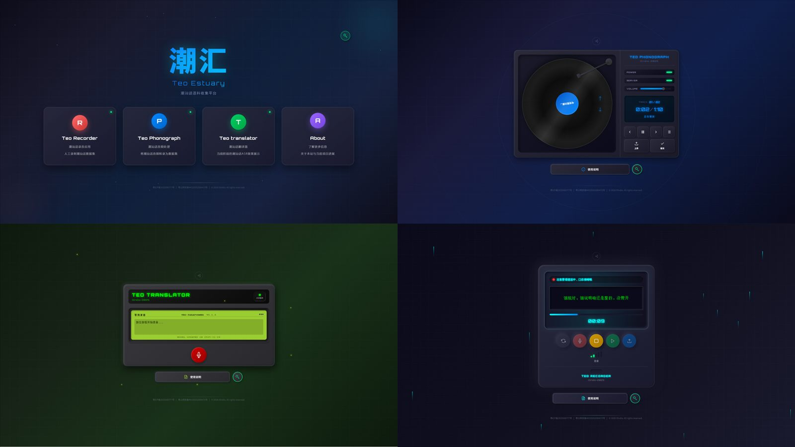
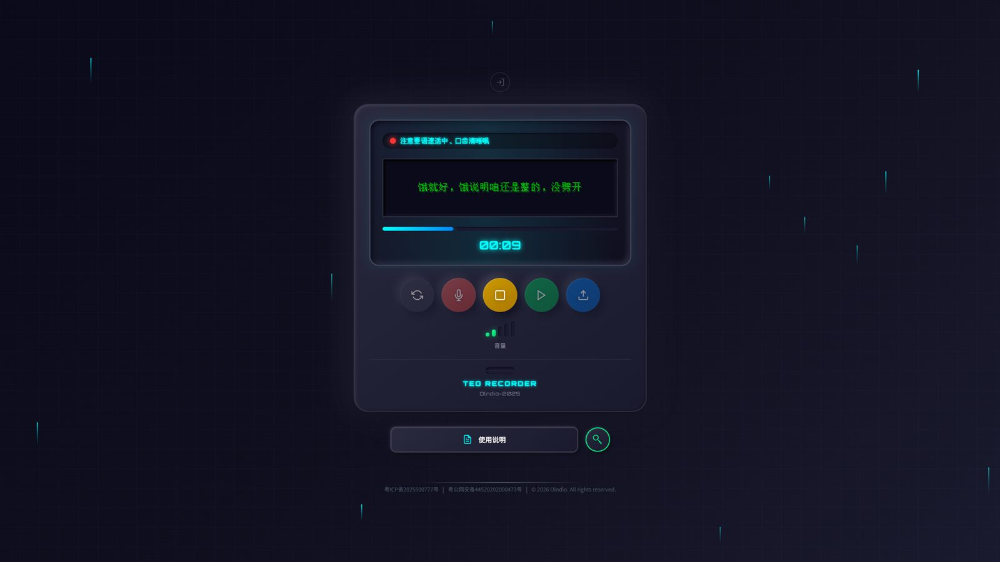
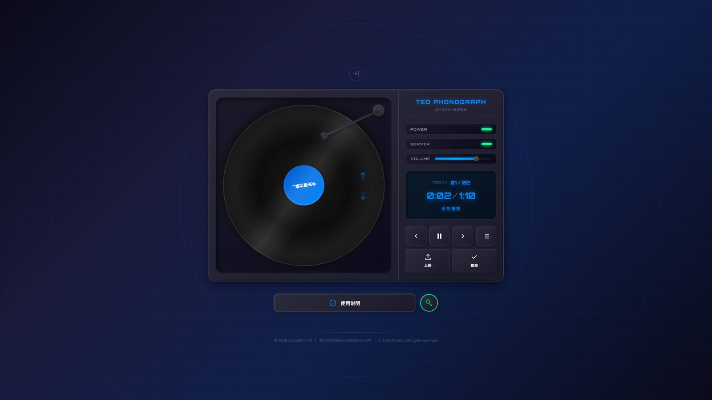
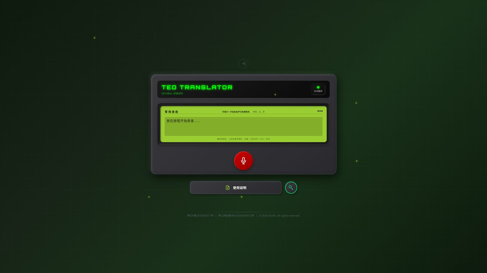
管理后台提供语料审核、词块编辑、数据统计、词典管理、数据导入导出等完整的数据管理功能： 对 Teo Phonograph 上传的音频进行批量处理与转录，借助 Emilia 服务完成 VAD 和初步 ASR， 再通过 jieba 分词 + 潮语词典逐词翻译生成标注底稿；支持 API Key 多租户管理与渠道用量追踪。
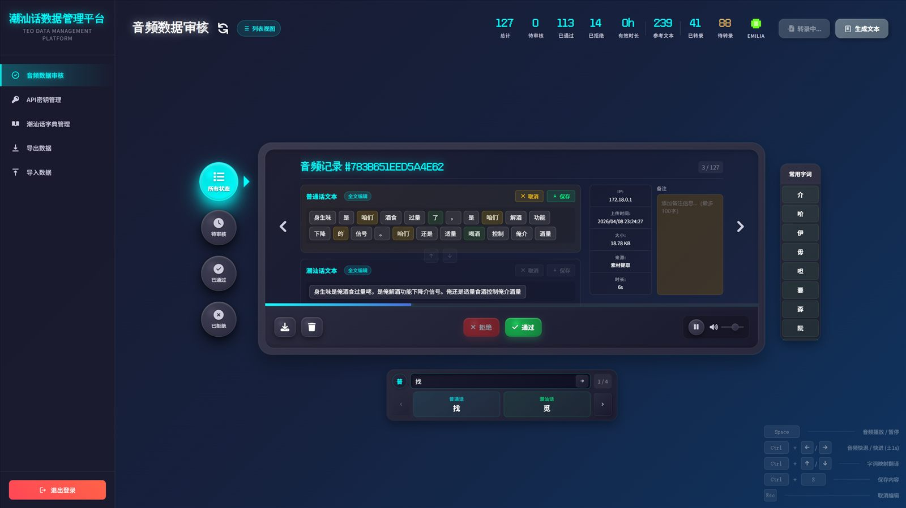
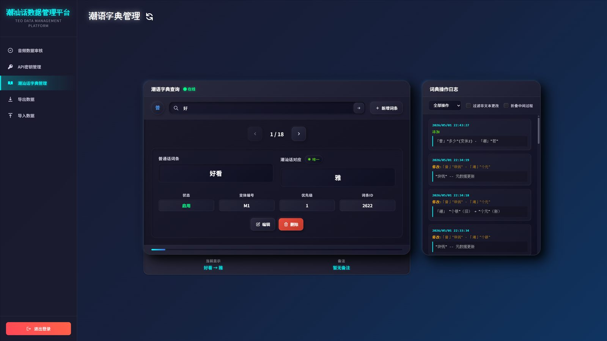
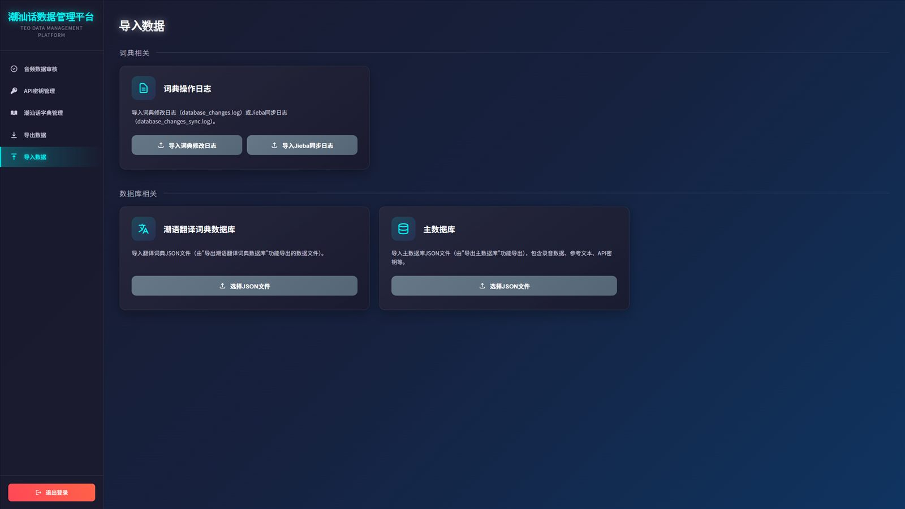
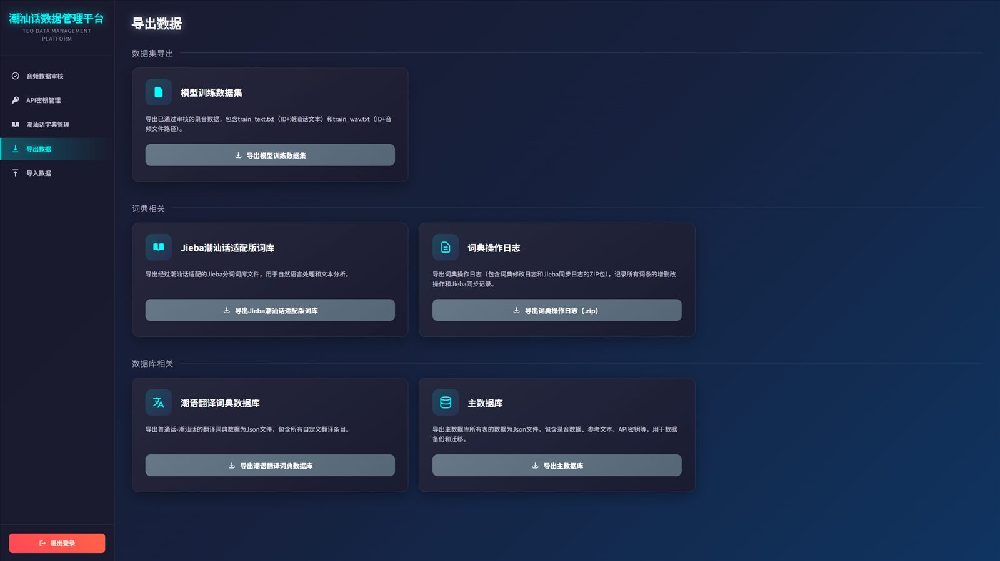
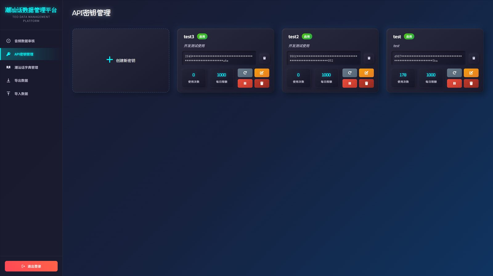
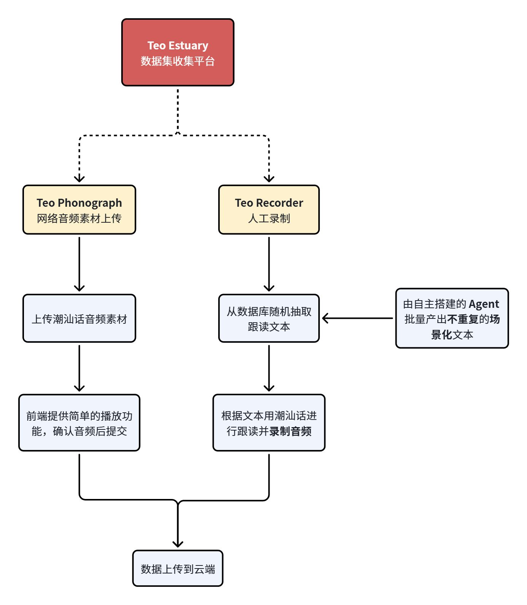
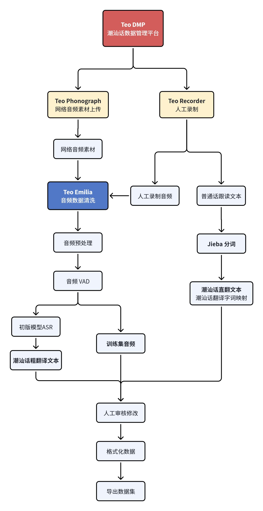
完全正字或完全谐音的转写方案都存在缺陷（参考 teochew-g2p 项目对「歹看正字法」的讨论）， 因此需要基于一套新原则——谐音与象形结合——为发音与汉字建立绑定，形成自维护词典，实现三个目的：
由于自维护词典中的词在中文语境下并不通用，最终用大模型介入文本理解作为 ASR 后处理，直接把识别结果翻译成中文； 为此同步维护一套词典 skill，让 AI 理解 ASR 结果的语义。这套机制也服务于 Cane 终端的「方言语音输入」。
Teo-Emilia 是基于 Amphion/Emilia-Pipe 二开的音频预处理服务， 与整个平台形成正向反馈循环：人工打标积累语料 → 训练 ASR 模型 → 模型部署回 Emilia 辅助下一批音频的自动清洗与打标 → 打标效率提升 → 语料积累加速 → 模型效果更好。越用越快，人工标注干预逐步减少。
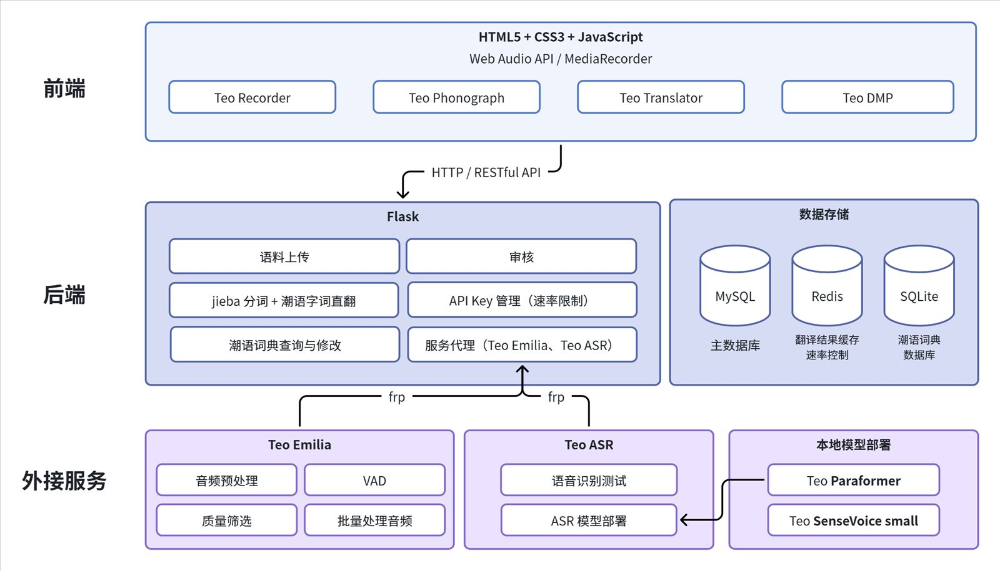
| 层级 | 技术 | 用途 |
|---|---|---|
| 前端 | HTML5 / CSS3 / JavaScript | 页面结构与交互逻辑 |
| 前端音频 | Web Audio API · MediaRecorder API | 音频录制与播放 |
| 后端 | Python 3.11+ / Flask 3 | RESTful API 服务 |
| 存储 | MySQL 8.0 · Redis · SQLite | 主数据 / 翻译缓存与限流 / 词典库 |
| 分词与翻译 | jieba + 潮语词典 | 普通话分词与逐词翻译 |
| 部署 | Docker Compose · Pixi | 容器化一键部署 / 统一环境管理 |
| 外部服务 | 用途 |
|---|---|
| Teo-Emilia | 音频 VAD / 质量筛选 / 初步 ASR（5029） |
| Teo-ASR Service | 潮汕话语音识别（5026） |
| Dify Agent | 参考文本生成工作流 |
基于开源数据集训练出 1 版潮汕话 ASR 模型（FunASR 的 Paraformer），已实现基本对话场景的 demo：
长期愿景：让不会说普通话的老年群体直接用潮汕话控制 AI。需要说明的是：微信已上线潮汕话语音转文字能力， 个人开发在资源上难以与厂商相比；项目目前暂时搁置，但数据平台、词典与 ASR 管线的工程经验可完整迁移。
项目基于 MIT License 开源；音频预处理服务 Teo-Emilia（基于 Emilia 二开）也已开源。 后续规划：跟读文本生成智能体开源、Teo-Recorder 音频接入 Emilia 清洗、 ASR 模型上传 ModelScope / HuggingFace、词典 skill 同步开源。